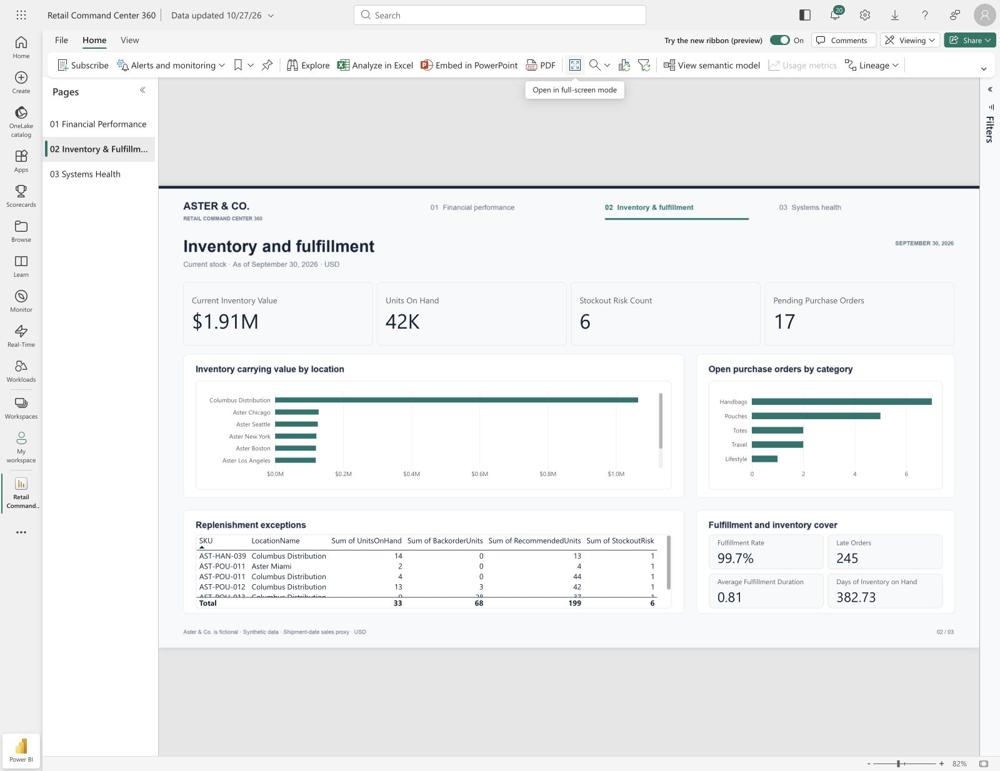
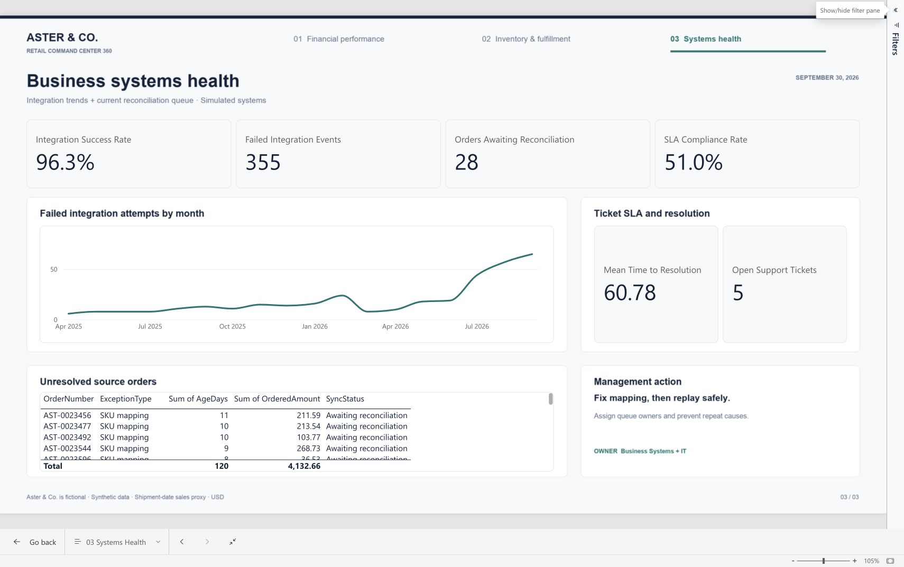

Three connected decision views
Inside the Power BI report.
Explore actual captures of the saved native report. Each page connects a business question with verified metrics and a practical next action.
Public captured walkthrough · Synthetic data · This page is not a live Power BI embed. Page tabs below change the capture; they do not filter the underlying report.

Is growth producing healthy margins?
Compare posted net sales with budget, investigate channel contribution and inspect category profitability. The native quarter slicer has been verified against independent controls.
Management action
CFO and merchandising: review pouch/travel discount depth alongside supplier costs. Q3 2026 sales grew 9.9% year over year, but margin declined 2.75 percentage points.

Is stock in the right place?
Current location balances, open purchase orders and the exception queue expose shortages within a business carrying substantial inventory. Historical inventory cover uses daily balances, not a current snapshot average.
Management action
Inventory and procurement: check donor availability before transfers, expedite affected approvals and receipts, and address slow stock circulation. Recommendations are candidates, not automatically executable allocations.

Which business records need attention?
The source-order-to-ERP anti-join catches absent webhooks as well as logged failures. SLA eligibility includes overdue open tickets. Ignored duplicate webhooks are measured separately.
Management action
Business Systems and IT: assign the 28-order queue, fix mapping before safe replay, and confirm business reconciliation. The $4,132.66 queue value is ordered exposure, not established lost revenue.
Tables and location rankings scroll in the original report. Full queues and analysis outputs are available in the repository. Native Power BI public embedding is currently unavailable for this report.